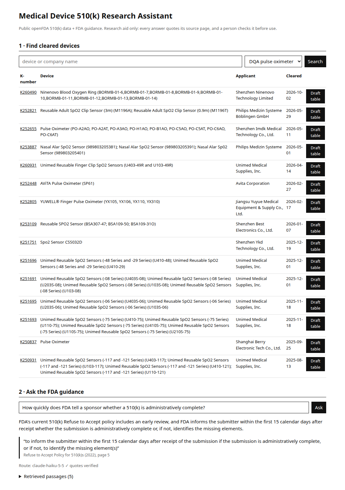

A small full-stack app for regulatory research. It loads cleared devices from openFDA into PostgreSQL, answers questions from three FDA guidance documents with word-for-word quotes, and drafts a predicate table where every row links to its FDA record.
Teams preparing a 510(k) look up two things again and again: which cleared devices are similar, and what FDA guidance says about a step. A chatbot that answers fluently but cannot point to the page is a liability in a regulated submission.
Faster first research, with every claim traceable to an FDA page or record.
Regulatory advice. The predicate table is a filter on product code, marked DRAFT for a person to judge.
If a quote is not in the cited page word for word, the answer is not shown.
openFDA 510(k) API, five product codes (pulse oximeter, glucose meter, infusion pump, blood pressure, ECG electrode) → clean names, dates, duplicates → upsert into a devices table. Row counts logged per code.
Three public FDA guidance PDFs → 150-word chunks that keep their page number → bge-small embeddings in pgvector, plus a Postgres full-text index.
Keyword (full-text), embedding, and hybrid (reciprocal rank fusion). Twenty questions with the gold page were written and committed before any retrieval run.
Claude Haiku 5.5 returns JSON with quotes. A deterministic checker looks for each quote in the cited passage. Only a failed check escalates to Claude Opus 5.5. Every call goes to a cost ledger with a hard budget.
Device search, ask box with the route shown (which model, whether the quotes passed), retrieved passages, and a downloadable draft predicate table.

FDA guidance repeats exact phrases such as "Truthful and Accuracy Statement", which suits keyword search. The app default (hybrid) was fixed before the test and was not changed after it.
Same 10 questions, same 5 passages each. Fixed in advance to stay under the $0.30 budget.
| Measure (cascade, all 20 questions) | Result |
|---|---|
| Answers with every quote verified word for word | 20 / 20 |
| Answered (one honest "not found") | 19 / 20 |
| Cites the labelled page | 15 / 20 (17 counting repeated checklist pages) |
| Gold page among the 5 retrieved passages | 17 / 20 |
| Out-of-scope questions answered | 0 / 3 |
| Cost of the 20-question run | $0.0083 |
Three misses never had the gold page in the five passages. A bigger model cannot quote what it never sees, which is why Opus scored the same.
Two checklist items repeat across three appendices. The model cited a correct copy on another page; the frozen label counted it wrong. Left as is and reported.
One question was retrieved but Haiku said "not found". The cascade escalates only on failed quotes, so Opus never saw it. Next step.
Twenty questions from three documents is a sanity check, not a benchmark. Full list in FAILURES.md.
scripts/db.sh start # PostgreSQL + pgvector (pixi), or docker compose up db uv sync uv run python etl/devices.py # openFDA → devices uv run python etl/guidance.py # FDA PDFs → chunks + embeddings (cd web && npm ci && npm run build) uv run uvicorn app.main:app # http://localhost:8000 uv run pytest -q # 13 tests